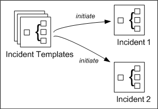
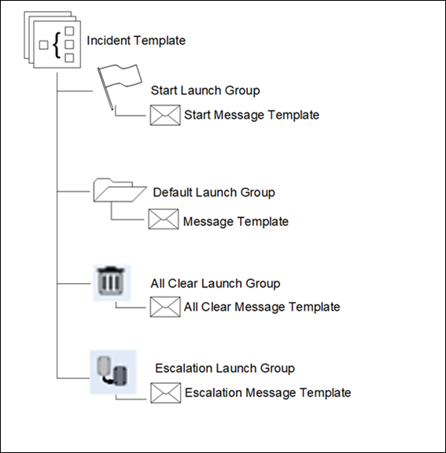

Incident Templates
An incident template represents a template for a real world incident such as fire or ventilator thermo overload and so on.

Incident templates contain notification templates, which have all the required information about notifications necessary to handle a specific type of incident.
There are principally three ways in which an incident can be initiated from an incident template,
- Automatically by the system, based on system events and trigger rules
- Manually or automatically during the execution of operating procedures (depending on the operating procedure step configuration)
- Manually by an operator
The system can be configured to react to events occurring in the system and automatically trigger incidents.
Incident templates can be configured with a set of triggers, in which each trigger contains a number of filter rules that are applied to events occurring in the system. If all the filter rules of a trigger match, then Notification uses the corresponding incident template to initiate a new incident. Incidents automatically triggered by events are considered to be incidents associated with an event. This is termed as Triggering.
Incidents can be initiated during the execution of operating procedures. In the case of an initiate incident operating procedure step configured for manual execution, the operator will manually initiate the incident using the user interface. In the case of an initiate incident operating procedure step configured for automatic execution, the system will automatically initiate the configured incident template without user interaction. Incidents initiated from within operating procedures are also considered to be incidents associated with an event.
Also, an operator can manually initiate an incident when a real world incident occurs.

Messages is kind of notification that can be configured as notification templates. See Notifications and Notification Templates.
If a notification template is initiated without associating to any configured incident template then the corresponding notification gets launched under Ad Hoc Incident.
Launch Groups
Within an incident template, notification templates are organized into Launch Groups according to their intended use. When an incident template is imported from a previous market packages, the recipients are not imported.
When an import operation is performed on an existing incident template, then the new incident template must be saved as incident Template_[num], where [num] is a numeric value which keeps increasing as templates with the same name are imported, for example, when you import an existing incident template by name “Fire”, the new incident template must be saved with the name as Fire_1.
Notification templates associated with the imported incident template are also imported in Applications > Notification > Notification Templates in the System Browser. The name of the notification template is modified as [Notificationname]_[num], that is linked to the launch group of imported incident template. [Notificationname] is the name of the notification that is imported and [num] is a numeric value.
Notification provides the following Launch Groups:
- Default Launch Group - The notification templates in default launch groups typically are used during the management phase of incidents and always require manual launch.
There are two special types of launch groups whose notification templates will be automatically launched by the system at different points in time during the incident lifecycle.
- Start Launch Groups: contain notification templates that are launched when an incident is initiated.
- The All Clear Launch Group: contains All Clear notifications, which are launched when an incident enters the All Clear stage, or when normal conditions are restored. For more information on Start Launch Groups, refer to Setting a Launch Group
- Other launch groups typically contain notification templates to be used in later stages of incidents.
For incidents triggered by events and automatic operating procedure steps, the system automatically launches notification templates in the start launch group with no user interaction. For incidents manually initiated by an operator, the notification templates in the start launch group will be preselected during incident initiation, and the operator can review and customize the Start notifications that will be launched.
When an incident enters the All Clear stage, principally all active notifications of the incident will be canceled and then all notification templates in the All Clear launch group will be launched. There are two ways in which incidents enter the All Clear stage: - Incidents associated with an event (triggered by an event or initiated from within an operating procedure) will automatically enter the All Clear phase when the associated event is reset, at which point the active notifications are canceled and the All Clear notifications are launched automatically.
- For incidents not associated with an event (manually initiated via the user interface), operators will manually command the incident to enter the All Clear stage. At that point in time, the system will automatically launch all notifications from the All Clear Launch Group.
- The Escalation Launch Group contains the notification templates that are used (referenced) for escalation.
In contrast, notification templates in regular launch groups typically are used during the management phase of incidents and always require manual launch.
When Notification initiates a new incident that is associated with an event (either triggered by an event or initiated from within an operating procedure), event variables are used to extract information from the associated event and to place this information into the text content of the messages being sent. More specifically, event variables are placed into the text content of message templates, and each event variable maps to a certain attribute of associated events from which information is extracted during an actual message launch.
For example, an event variable in the title of a message template maps to the event source (device that caused the event) so that the name and location of the device can automatically be placed into messages based on this template.
For more information on event variables, refer to Creating a Message Template.